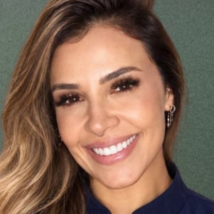
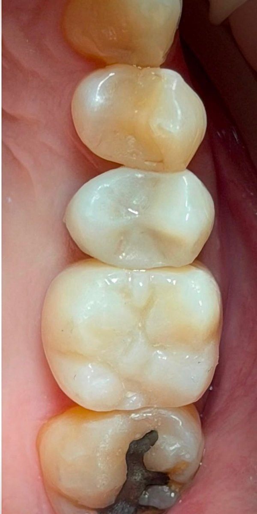
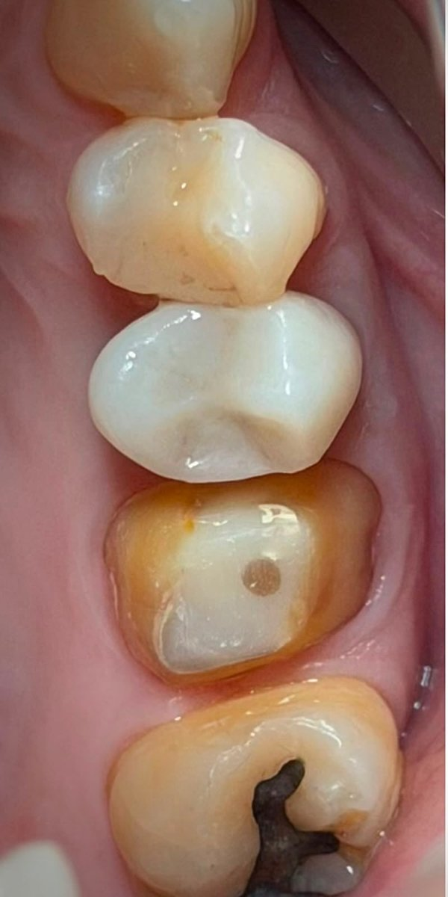
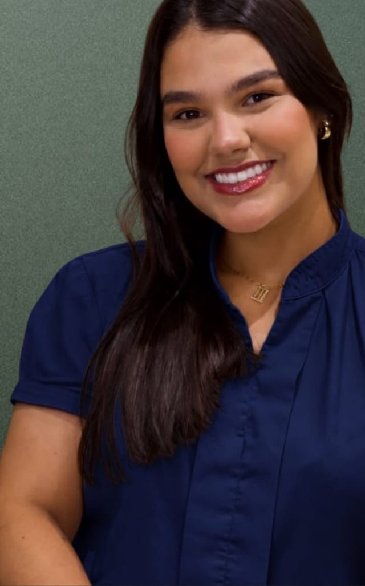
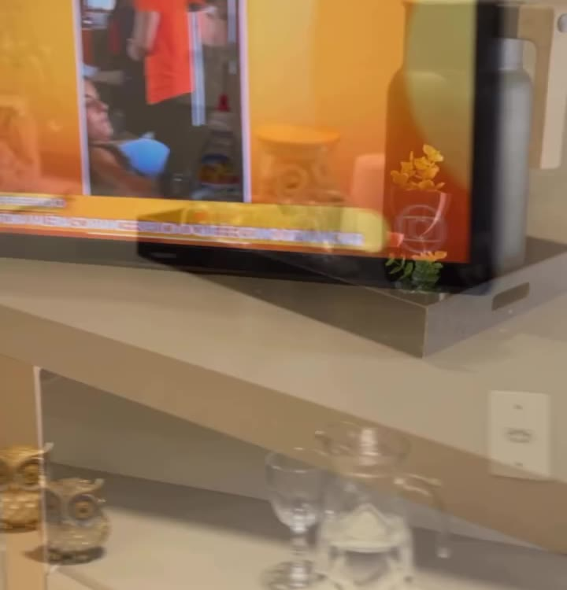

CRO-MG 47295
Dra. Melina Corradi
Responsável técnica e protesista
Cirurgiã-dentista apaixonada por transformar sorrisos com atendimento humanizado.
Cirurgiã-dentista · Mateus Leme, MG
Atendimento humanizado, diagnóstico transparente e tratamentos planejados para um resultado bonito, natural e duradouro.

Acredito que a odontologia vai muito além da estética: ela promove saúde, bem-estar e qualidade de vida. Meu compromisso é cuidar de cada detalhe com atenção e carinho.
Dra. Melina Corradi Cirurgiã-dentista · protesista · CRO-MG 47295
Da prevenção à reabilitação completa, com especialistas que trabalham juntos no mesmo plano.
Consultório, caseiro supervisionado ou combinado, sempre após avaliação.
Saiba mais 02Reabilitação de dentes perdidos com planejamento individual.
Saiba mais 03Prótese total caracterizada e coroas que devolvem função e estética.
Saiba mais 04Aparelho convencional, estético, autoligado ou alinhadores invisíveis.
Saiba mais 05Profilaxia profissional que remove placa, tártaro e manchas.
Saiba mais 06Resina composta na cor do dente e cuidado com a polpa.
Saiba mais 07Extrações e cirurgias com planejamento radiográfico e suporte.
Saiba mais 08Procedimentos faciais com a Dra. Bárbara Herculano.
Saiba maisCoroa total em um dente comprometido: resistência, função e estética de volta. Arraste para comparar.


Responsável técnica e protesista
Cirurgiã-dentista apaixonada por transformar sorrisos com atendimento humanizado.
Ortodontista e ortopedista facial
Alinhamento dentário, harmonia facial e saúde do sorriso.
Implantodontista e cirurgião
Excelência e dedicação para devolver função e qualidade de vida.

Secretária
Quem recebe cada paciente com carinho, atenção e dedicação.
Você conta o que incomoda e o que deseja. A doutora examina com calma e, se preciso, pede radiografias.
Tudo explicado com transparência: o que é necessário agora, o que pode esperar e as opções de tratamento.
Etapas, prazos e valores definidos antes de começar, para você decidir sem pressa.
Cuidado em cada etapa e retornos programados para manter o resultado por muito tempo.
Não achou a sua? Mande no WhatsApp, a resposta vem da própria equipe.
Perguntar no WhatsAppSim. O clareamento só é indicado depois da avaliação e da limpeza, para conferir a saúde dos dentes e da gengiva e escolher o protocolo certo para você.
Depende da condição óssea e da cicatrização de cada paciente. Em muitos casos a reabilitação fica pronta em cerca de 90 dias, sempre com planejamento individual.
Convencional, estético, autoligado ou alinhadores: cada um tem indicação própria. Na avaliação com o ortodontista você conhece as opções para o seu caso.
A maioria dos pacientes se beneficia de uma limpeza profissional a cada seis meses, mas a frequência ideal é definida na consulta.
A clínica atende de segunda a sábado, com hora marcada. Agende pelo formulário ou chame no WhatsApp.
